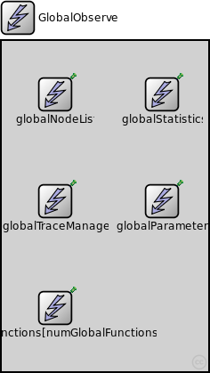
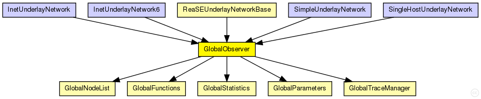

This documentation is released under the Creative Commons license
This documentation is released under the Creative Commons licenseglobal module that contains the globalNodeList and the globalStatistics module
The following diagram shows usage relationships between types. Unresolved types are missing from the diagram. Click here to see the full picture.
The following diagram shows inheritance relationships for this type. Unresolved types are missing from the diagram. Click here to see the full picture.
If a module type shows up more than once, that means it has been defined in more than one NED file.
| ReaSEUnderlayNetworkBase (compound module) |
The InetUnderlay ned-file See also: ReaSEUnderlayConfigurator |
| InetUnderlayNetwork (network) |
The InetUnderlay ned-file See also: InetUnderlayConfigurator |
| InetUnderlayNetwork6 (network) |
The InetUnderlay ned-file See also: InetUnderlayConfigurator |
| SimpleUnderlayNetwork (network) |
The SimpleUnderlay ned-file See also: SimpleUnderlayConfigurator |
| SingleHostUnderlayNetwork (network) |
The SingleHostUnderlay ned-file See also: SingleHostUnderlayConfigurator |
| Name | Type | Default value | Description |
|---|---|---|---|
| numGlobalFunctions | int |
| Name | Value | Description |
|---|---|---|
| display | i=block/control |
| Name | Type | Default value | Description |
|---|---|---|---|
| globalNodeList.maliciousNodeProbability | double |
probability for a node to be malicious on creation |
|
| globalNodeList.maliciousNodeChange | bool |
dynamically change number of malicious nodes |
|
| globalNodeList.maliciousNodeChangeStartTime | double |
simTime at which nodes begin to become malicious |
|
| globalNodeList.maliciousNodeChangeRate | double |
number of nodes to change to malicious compared to all nodes |
|
| globalNodeList.maliciousNodeChangeInterval | double |
time between two node changes to malicious |
|
| globalNodeList.maliciousNodeChangeStartValue | double |
minimum amount of malicious nodes in the peerSet |
|
| globalNodeList.maliciousNodeChangeStopValue | double |
maximum amount of malicious nodes in the peerSet |
|
| globalNodeList.maxNumberOfKeys | int |
maximum number of overlay keys the bootstrap oracle handles |
|
| globalNodeList.keyProbability | double |
probability of keys to be owned by nodes |
|
| globalParameters.rpcUdpTimeout | double |
default timeout value for direct RPCs |
|
| globalParameters.rpcKeyTimeout | double |
default timeout value for routed RPCs |
|
| globalParameters.printStateToStdOut | bool |
print overlay ready messages to std::cout |
|
| globalParameters.topologyAdaptation | bool |
turn on topologyAdaptation (for demonstrator) |
|
| globalTraceManager.traceFile | string |
file name of the trace file |
|
| globalStatistics.outputMinMax | bool |
enable output of minimum and maximum for scalars |
|
| globalStatistics.outputStdDev | bool |
enable output of standard deviation for scalars |
|
| globalStatistics.measureNetwInitPhase | bool |
fetch statistics in init phase? |
|
| globalStatistics.globalStatTimerInterval | double |
interval length of periodic statistic timer |
// // global module that contains the globalNodeList and the globalStatistics module // module GlobalObserver { parameters: int numGlobalFunctions; @display("i=block/control"); submodules: globalNodeList: GlobalNodeList { parameters: @display("p=60,60;i=block/control"); } globalParameters: GlobalParameters { parameters: @display("p=180,180;i=block/control"); } globalTraceManager: GlobalTraceManager { parameters: @display("p=60,180;i=block/control"); } globalFunctions[numGlobalFunctions]: GlobalFunctions { parameters: @display("p=60,300,column;i=block/control"); } globalStatistics: GlobalStatistics { parameters: @display("p=180,60;i=block/control"); } }
This documentation is released under the Creative Commons license